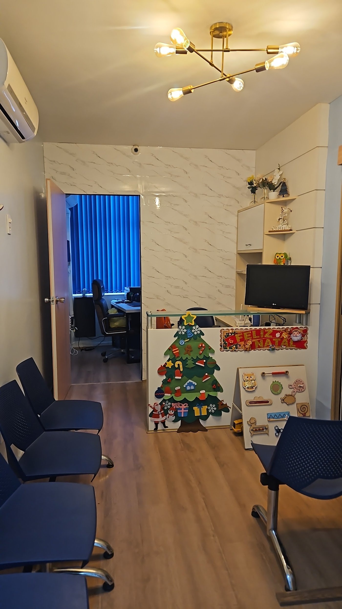

Consultas oftalmológicas cuidadosas e individualizadas, que vão além da prescrição de óculos: prevenção, diagnóstico e tratamento de doenças oculares.

A Oftalmologia Malavazi & Toledo é um consultório de oftalmologia em Niterói – RJ. O atendimento é realizado pelos oftalmologistas Dra. Débora Malavazi e Dr. Saymom Toledo.
Nosso objetivo é oferecer um atendimento completo e personalizado, com foco no cuidado contínuo para a preservação da visão.
Os olhos merecem atenção mesmo quando não há sintomas: muitos problemas oculares são silenciosos.
Avaliação completa e detalhada, com explicação de cada procedimento antes do exame.
Check-up ocular de rotina para acompanhar a saúde dos olhos ao longo do tempo.
Atendimento com médicos com formação em retina, como na avaliação da doença macular relacionada à idade.
Avaliação com especialista em catarata e orientação sobre o tratamento indicado.
No mesmo espaço também funciona o consultório de pediatria e neonatologia da Dra. Laís Campos.
Fale com a central de atendimento pelo (21) 99116-4490 e escolha o melhor horário.
Rua Miguel de Frias, 51, sala 503, em Icaraí. Atendimento de segunda a sexta, das 8h às 18h.
Exame detalhado, explicação clara do diagnóstico e orientação sobre o tratamento.
Equipamentos de qualidade em um espaço aconchegante, no coração de Icaraí.
Entrada e estacionamento com acessibilidade para pessoas em cadeira de rodas.
Cartão de crédito, cartão de débito e pagamento por aproximação (NFC).
Opções de estacionamento pago, coberto e descoberto, nas proximidades.
“Fui muito bem atendido pelo Dr. Saymon. Exame bem detalhado e já estou melhorando da queratite. Recomendo com empenho.”
Enio Monçôres CarvalhoAvaliação no Google“Excelente profissional, escuta atenciosa, muito simpática, explica todos os procedimentos para o paciente antes de executar, calma e com certeza recomendo a Dra. Débora Toledo.”
Valesca ValentimAvaliação no Google“Experiência excelente! A Dra. Débora é, de cara, uma profissional fora da curva, além de ser gente finíssima! Aparelhos de qualidade e espaço bastante aconchegante.”
Jessé NevesAvaliação no Google“O atendimento da recepção foi perfeita e do médico também. O Dr. Saymom abriu uma vaga para me atender de urgência e encaminhou o devido tratamento.”
Vanessa CordeiroAvaliação no Google“Atendimento de extrema qualidade! Doutora Débora é uma excelente profissional, cuidadosa e precisa! Todos os equipamentos de primeira qualidade, e possui ótimos horários de atendimento!”
Josué NevesAvaliação no Google“Equipamentos de ponta e uma consulta muito didática e confiável.”
Vinicius MeneguitteAvaliação no Google